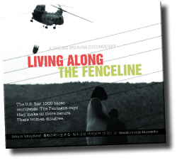

Friends,
This weekend, thousands will gather at Ft. Benning, Georgia, to protest the Western Hemisphere Institute for Security Cooperation/School of the Americas in an annual mobilization sponsored by SOA Watch.
FOR staff and members will be participating, and Southwest regional organizer Susana Pimiento Chamorro will host a workshop and facilitate a discussion on Saturday evening. Read on to learn more!
Justice, not impunity
Join staff and other members of the Fellowship of Reconciliation at the annual School of the Americas Watch vigil and mobilization. We’re heading to Ft. Benning, Georgia, this weekend, Nov. 22-24 to keep up the pressure to close the School of the Americas (SOA/WHINSEC). We carry with us the strength of social movements in Latin America who are turning their back on the SOA. We won't stop!
Thousands will gather at the gates, with speakers, music, street theater, workshops and networking with people from across the Americas. We come together at the gates of Fort Benning -- where the killers are trained -- to demand an end to U.S. militarization and to impunity. The vigil weekend is your opportunity to connect your communities with those across the hemisphere who are resisting Empire. In addition to the main funeral procession on Sunday, we will again have rallies, concerts, workshops, caucuses and street theater on Friday and Saturday.
And this year, on Friday, we will once again kick off the weekend joining our sisters and brothers to demand the closure of private detention prisons, like the Stewart Detention Center, and to highlight the connection between militarization and forced migration.
Learn more about the event and how to attend, including travel information and a ride board.
FOR workshop and discussion on solidarity, militarism and gender
Southwest regional organizer Susana Pimiento Chamorro, Southeast & Mid-Atlantic regional organizer Lucas Johnson, and FOR National Council vice chair Isaac Beachy will all attend this year's SOA Watch. Susana will be facilitating two events Saturday evening: A workshop on international solidarity, and a discussion on a documentary film about militarism and gender. We hope to see you at one or both of these events!
Workshop: International solidarity can make the difference! Taking the lead from the Global South
Saturday, Nov. 23, 6:30-7:45 PM
Colombus Convention Center Room 101
Film: "Living Along the Fenceline": Women mobilizing in opposition to militarization and military bases
Saturday, Nov. 23, 8:00-9:15 PM
Colombus Convention Center Room 101
International solidarity can make the difference!
The workshop will explore concrete ways in which international solidarity can make the difference in countering the U.S. militarism in the Americas and engaging in nonviolent resistance to militarization and to the economic forces behind forced displacement and dispossession. We will examine opportunities for working abroad outside of the development and assistance boxes, as Human Rights Observers in Colombia, sharing the lives of courageous peasant farmers striving for a life of peace and dignity, and protecting the work of human rights defenders who assist communities threatened by mining, agribusiness and megaprojects.
We will also examine how we can join groups from throughout the Americas that have come together in a Continental Campaign to end foreign military presence in the Hemisphere. We will learn about their efforts to counter the expansion of U.S. military bases in Colombia, Chile, Peru and Argentina and how the Continental Campaign is challenging military responses to natural disasters and illicit drugs and suppression of dissent.
But militarism is more than weapons, boots and bases. Therefore, we will also be looking at how we can respond to the call coming from Latin America to demilitarize our consciences, our institutions and communities to make the Americas a hemisphere of peace. Sponsored by FOR.
"Living Along the Fenceline"
What is the story of U.S. imperialism? What happens on and around the 1000 U.S. bases which grip countries across the globe, from Afghanistan to Korea?
"Living Along the Fenceline" brings us the story of seven women organizers who live next to military bases in Texas, Puerto Rico, the Philippines, Japan, Korea, Guam, and Hawai'i. Sponsored by Women for Genuine Security; discussion sponsored by FOR.
Please join Susana, Lucas, Isaac, and other FOR members at SOA Watch this coming weekend -- we hope to see you there! |